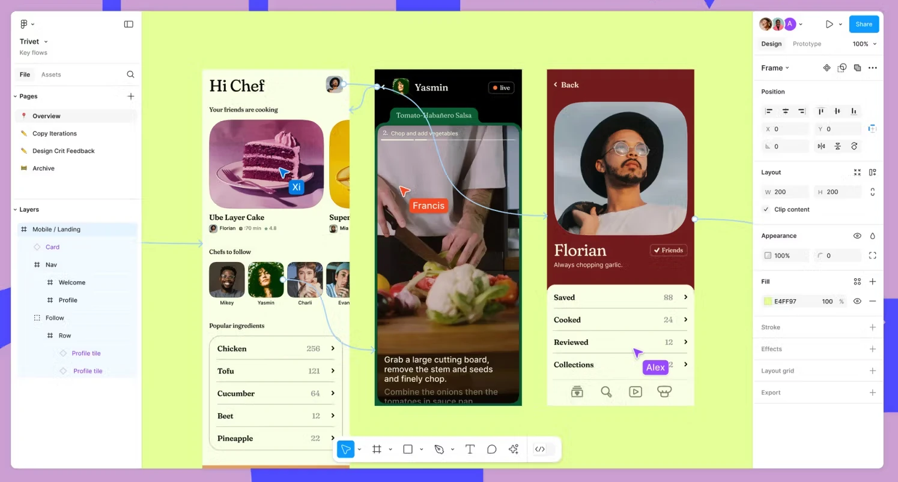
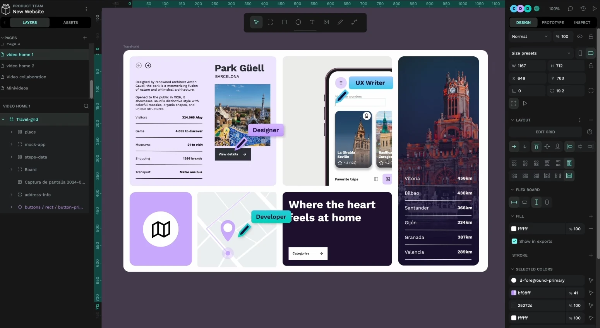
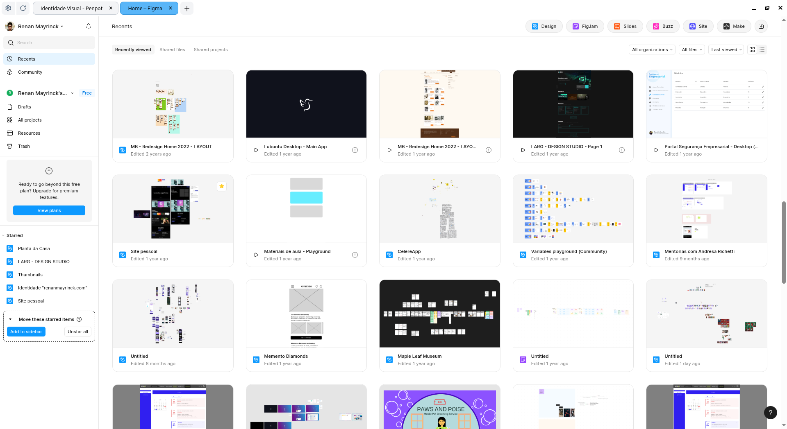
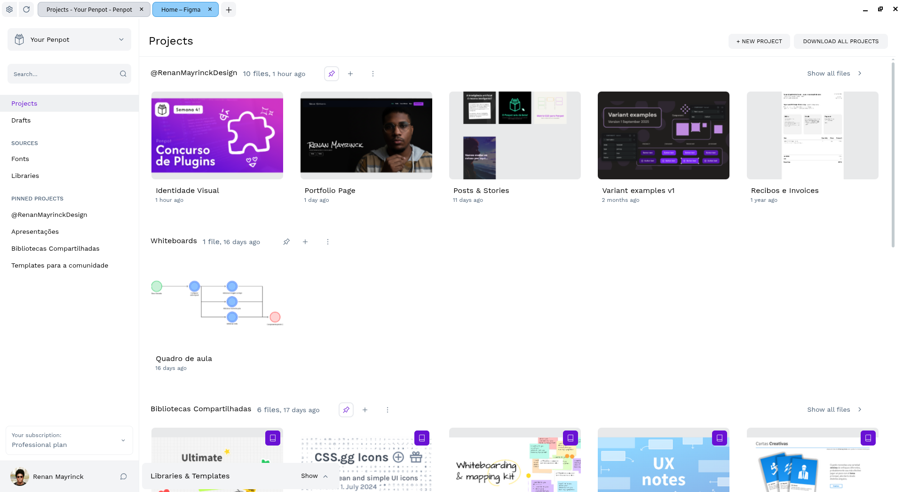
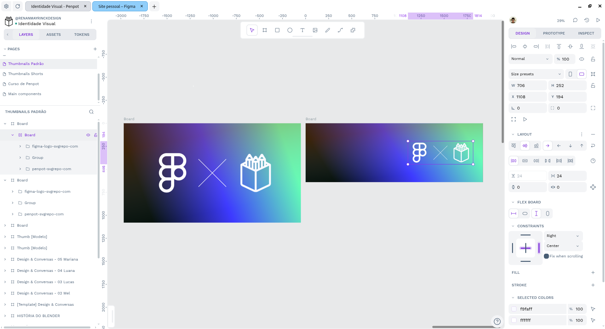

Quando bate aquela dúvida...
Figma ou Penpot, qual usar para começar um projeto de interface? Neste artigo pretendo fazer uma comparação honesta, considerando as capacidades de cada ferramenta, como elas se comportaram na minha experiência e mostrando os prós e também alguns contras de cada uma delas.

Quando a gente fala de escolhas entre uma coisa e outra, os debates podem ficar bastante acalorados, especialmente porque tendemos a defender o lado que escolhemos. Neste artigo eu pretendo trazer uma visão um pouco diferente... eu quero te dar as ferramentas para escolher, não exatamente uma escolha pronta para consumo.
O que é o Figma?
O Figma, hoje, é um ecossistema criativo, contando com ferramentas de whiteboarding, slides, construção de sites e também a tradicional ferramenta de prototipação, que é a base de tudo.
O recurso de edição simultânea da ferramenta permite que várias pessoas estejam no mesmo arquivo fazendo alterações e melhorias ao mesmo tempo, trabalhando colaborativamente.
O Figma é amplamente adotado pelo mercado nacional e internacional como uma ótima ferramenta de prototipação, tendo muitos cursos, templates e plugins. Boa parte disso ainda desatrelado de seus planos de assinatura. O Figma ficou tão grande que até a Adobe tentou comprá-lo uma vez que não conseguiu bater de frente usando sua própria ferramenta, o Adobe XD.
O que é o Penpot?
O Penpot é uma ferramenta de prototipação de código aberto que integra design e código a partir de diversas frentes. Ele permite que times de até 10 pessoas possam trabalhar em múltiplos arquivos gratuitamente, mas também oferece planos adicionais para quem precisa de mais recursos.
O Penpot se destaca não somente pela relação custo-benefício como por permitir que seus usuários baixem instâncias da ferramenta para usar offline em seus computadores ou hospedadas em outros servidores, permitindo que empresas e indivíduos usem a ferramenta de forma decentralizada.
Há empresas no mercado nacional e também internacional que adotaram o Penpot como uma alternativa ao Figma para fugir de alterações de planos ou aumentos repentinos e para ter alguma independência e privacidade ao criar projetos.
Critérios de comparação e observações
Para comparar as duas ferramentas, eu terei que colocá-las em um pé de igualdade de propósitos, então no caso do Figma, irei analisar somente os recursos de prototipação, e não os demais detalhes e integrações do ecossistema, já que assim ele estará em pé de igualdade com o que o Penpot é em conceito e poderemos olhar para ambos dentro de um mesmo escopo. Estarei usando para a comparação a versão mais recente do Figma (Out, 2025) e do Penpot, considerando o mesmo período, então temos:
Nesta comparação usaremos 10 principais vetores para distinguir desde o acesso até as funcionalidades internas de cada ferramenta e compará-las. É importante salientar que o Figma é uma ferramenta mais antiga que o Penpot e pelo seu tempo de existência, vários recursos podem estar ou estão mais maduros em comparação não somente ao Penpot, mas a outras soluções do mercado também.
Vetor 01: Acesso e valores
O Figma permite qualquer pessoa criar uma conta gratuitamente e usar a plataforma em um modo limitado, onde se pode criar uma quantidade limitada de arquivos e certas funcionalidades só ficam plenamente disponíveis após um pagamento de um dos planos, que começam em $15USD podendo chegar a $20USD (em conversão, valores ficam entre R$79 e R$106 por mês). Estes valores podem ser reduzidos caso você assine algum dos planos de forma anual ou consiga uma licença de estudante do Figma ao entrar em algum curso credenciado.
A diferença de preços acontece porque o Figma trabalha com licenças chamadas seats, que podem ter funcionalidades diferentes entre si. Para esta comparação, a licença collab foi desconsiderada, já que ela habilita acesso pleno a funcionalidades que não estamos considerando no comparativo (Figjam e Figma Slides).
O Penpot, assim como o Figma, tem um plano gratuito, porém este plano não limita funcionalidades de edição ou criação de arquivos, mas sim outras características da ferramenta como quantidade de pessoas em um time, tempo de histórico de versões e o armazenamento total.
Caso você precise de algo além em algum destes quesitos, os planos do Penpot começam em $7USD, podendo chegar ao limite de $175USD se você tiver um time muito grande (25 pessoas ou mais). Os custos convertidos ficam em R$37, podendo chegar a R$930 mensais. Para baratear o custo, o Penpot pode ser hospedado em um servidor ou instância local e gerido e hospedado internamente (até mesmo offline) sem custo de licenças. Serve tanto para empresas quanto indivíduos.
Nos planos empresariais, os preços podem subir bastante, tanto no Figma quanto no Penpot. Geralmente, este tipo de licença serve mais para quando a empresa precisa de controles mais rígidos em relação a ferramenta, como formas adicionais de autenticação, controles de histórico de acesso e alteração mais específicos ou coisa do tipo.
No Figma, o valor empresarial inicia em $25USD podendo chegar a $55USD por licença/membro. Em conversão, temos R$132 e R$292, respectivamente. Já no Penpot, o valor empresarial é de $950USD mensais (aprox. R$5050) para organizações, independente de tamanho.
Preços a parte, no quesito de acesso aos recursos da ferramenta, o Penpot oferece muito mais para seus usuários não pagantes do que o Figma, mesmo que sejam empresas. Trabalho em tempo real, construção de times, variáveis, dev mode e muitos outros recursos do Figma só estarão acessíveis para assinantes de planos determinados. No Penpot, tudo isso (exceto variáveis) já está acessível a partir do momento que você cria uma conta. Isso pode ser visto como uma vantagem competitiva para projetos com orçamentos mais modestos.
Vetor 02: Interface
O dashboard do Figma segue um conceito bastante minimalista e intuitivo, alocando alguns recursos úteis no topo e do lado esquerdo e deixando o espaço restante para mostrar os arquivos em uma grid ou lista. Há também como ver projetos e times em separado, o que facilita na organização. Os filtros e as thumbnails facilitam encontrar e entender do que se trata cada arquivo, porém o Figma mostra tanto o modo de visualização quanto o arquivo editável dentro do dashboard, o que pode dar a impressão de que há muita coisa para ver e gerar alguma confusão, mesmo quando se trata na verdade de duas formas de ver o mesmo arquivo.
O dashboard do Penpot também segue os mesmos princípios, porém é um pouco mais minimalista, já que não mostra arquivos do modo de visualização e permite algumas formas de organização facilitadas, como separar dentro de um único time, os arquivos por projeto, permitindo organizar e guardar certos arquivos dentro de contextos específicos, diminuindo a quantidade de coisas a se ver em tela.
Um pequeno defeito nesta parte da interface do dashboard é que no Penpot as thumbnails de arquivo tem tamanhos inconsistentes, então mesmo que você desenhe uma thumbnail em proporção 16:9, dependendo da sua resolução de tela, ela pode ficar sem preencher a largura ou altura do cartão, o que dá uma breve impressão de que algo está errado, mesmo que não esteja.

Já no workspace, onde desenhamos de fato as telas, o Figma mantém sua interface com conceito minimalista e que ocupa pouco espaço, dividindo a tela entre dois painéis laterais retráteis e uma barra flutuante abaixo. Nada chama muito a atenção além do que estiver selecionado, seja uma ferramenta ou funcionalidade. Isso ajuda no destaque para o canvas e o que está dentro dele. O que peca é que, com a recente implementação das traduções, certos elementos de interface não acompanham as mudanças de tamanho que uma palavra pode ter na troca de idiomas (e.g.: fill se torna preencher), isso faz com que certos campos fiquem pouco legíveis quando se está usando um idioma diferente do inglês.
No caso do Penpot, a interface também segue o mesmo modelo de painéis retráteis nas laterais e uma barra de ferramentas flutuante, só que no topo. Também há uma barra adicional para fácil acesso aos assets de fontes e cores na parte inferior esquerda.
O minimalismo da interface do Penpot por vezes peca na falta de rótulos em certos campos, por mais intuitivos que eles sejam. Isso pode fazer com que usuários novatos fiquem confusos sobre o que é aquele campo, mas não chega a ser um problema grave, já que a grande maioria deles tem titles que aparecem ao deixar o mouse em cima por algum tempo. Definitivamente, não é o ideal, mas funciona.
Vetor 03: Formatos de arquivos
O Figma permite que o usuário abra arquivos dos seguintes formatos: .fig (o padrão da ferramenta) e .sketch (formato da ferramenta concorrente de mesmo nome). Com o arquivo criado, você pode importar arquivos de imagem incluindo GIFs, vídeos e vetores SVG. Outros formatos são aceitos pelas outras funcionalidades do ecossistema, então foram omitidos. Formatos mais tradicionais podem ser suportados a partir de plugins da comunidade que convertem estes arquivos para formatos entendidos pelo Figma.
O Penpot não permite importar arquivos que não sejam no formato .penpot (o padrão da ferramenta), isso faz dele uma ferramenta inferior no sentido de compatibilidade de formatos suportados para importação como projeto. Assim como no Figma, aqui também há plugins da comunidade para converter arquivos de outros formatos para o formato aceito pelo Penpot, isso inclui arquivos do Figma. Uma vez que um arquivo está criado, você pode importar diversos formatos de imagens, incluindo GIFs, e vetores SVG. Vídeos ainda não são suportados.
Quanto a exportação, ambas as ferramentas permitem exportar os arquivos em seus respectivos formatos internos além de SVG, PDF e formatos de imagem.
Vetor 04: Funcionalidades internas
Tanto Figma quanto Penpot tem funcionalidades de prototipação e design bastante competentes, como máscaras, edição de vetores, controle de camadas, filtros e toda parte básica. A grande diferença entre eles está nas capacidades além do básico.
Ambos têm um sistema de componentes e variantes bastante robusto, mas neste contexto, o Figma sai na frente por permitir interações entre as variantes de um componente, independente das telas. Penpot ainda não suporta esta funcionalidade.
O Figma tem um sistema de variáveis, que permite armazenar tokens de design, assim como valores em sets diferentes. Isso permite não somente o uso consistente de decisões de design armazenadas como tokens como também criar lógica no protótipo, então você pode verificar se um set X está ativo e uma variável Y tem um valor, e se tiver, ele toma uma ação determinada. Isso ajuda a criar protótipos mais realistas e mais dinâmicos, mas está restrito para quem paga uma licença completa do Figma.
O Penpot, por sua vez, não dispõe de um sistema de lógica, mas tem um sistema muito competente de Tokens que pode ser acessado por todos. Este sistema permite armazenar contextualmente as decisões de design em sets que podem ser alternados facilmente, também criando mais dinamismo nas criações.
Em relação ao layout automático (flexbox) o Penpot avança a frente do Figma, já que implementa tanto o Flex quanto o Grid layout, incluindo margens e formas de controle mais refinado destas regras, algo que o Figma tem, mas neste é muito mais simples, prejudicando quem entende flexbox a fundo e quer explorar todo tipo de possibilidade que este recurso do CSS oferece.
Talvez o ponto de vantagem absoluta para o Figma neste quesito está em duas funcionalidades chave: os filtros e as animações. Os filtros como background blur, sombras, glass e as animações via smart animate (além das pré-prontas) estão no Figma já tem algum tempo e são muito bem quistas e fáceis de usar, enquanto o Penpot ainda está engatinhando neste cenário, tendo somente animações básicas pré-moldadas.
Vetor 05: Viewport e Testes
Este é um recurso presente em ambas as ferramentas, mas que operam de forma diferente. No Penpot, o view mode é somente uma forma de mostrar aquilo que você desenhou e poder interagir. Não há formas de configurar resoluções para testes mais diretos como proporção, first-page view ou scrolling de seções. O que você desenhou é o que aparece, na maioria dos casos, com pouca possibilidade de interação além de clicar.
Já no Figma, este modo é bastante refinado, permitindo selecionar resoluções que transformarão a viewport, em alguns casos, em um simulado do dispositivo escolhido, facilitando perceber como a tela será apresentada naquele contexto, além de permitir mais gatilhos de interação e a rolagem de conteúdo horizontal e vertical não somente da tela como das seções dentro dela. Isso é muito útil especialmente para testes de usabilidade.
O Figma também tem o aplicativo Figma Mirror, que permite ver a tela desenhada no Figma direto no seu smartphone. O Penpot não tem essa funcionalidade servida diretamente pela empresa, somente por aplicativos de terceiros.
Vetor 06: Ferramentas utilitárias
Este é um quesito que ambas as ferramentas estão em paridade total, já que se comparadas as características, para cada uma positiva terá uma negativa também. O Figma dispõe de um aplicativo para desktop para Windows e macOS, funciona diretamente no navegador e tem um app para smartphones (este somente para algumas funcionalidades). Não há suporte real do app para desktop no Linux, tendo alternativas da comunidade para suprir esta demanda.
Já o Penpot foi projetado para funcionar no navegador, mas tem um cliente de desktop feito pela comunidade que permite acessar a plataforma em um app isolado (como no Figma Desktop). Também há um app para mirror, mas ele é um esforço de terceiros. O Penpot Desktop funciona para Windows, Mac e Linux, com diferentes performances em cada sistema, de acordo com relatos online e na própria comunidade do Penpot.
Vetor 07: Plugins, Templates e Comunidade
Este é um ponto que o Figma ganha, muito mais pelo tempo de existência do que qualquer outra coisa. As duas ferramentas têm um competente sistema de plugins e templates, sendo alguns deles até presentes nas duas ferramentas, então este é um caso em que a adoção da ferramenta determina a quantidade de recursos, mas ambas têm uma boa galeria de plugins e uma vasta quantidade de templates, guardadas as devidas proporções.
Importante lembrar que muitos serviços disponibilizados por plugins nada mais são do que websites que tem o serviço hospedado, então na ausência de algum plugin em alguma plataforma, talvez você possa só abrir o site diretamente e usar da mesma forma.
Quanto a comunidade, o Figma tem uma comunidade maior, além de mais recursos para engajá-la. Então sempre há eventos e coisas do tipo relacionados a ferramenta em diversas localidades, mas o Penpot não fica muito para trás. Há um espaço da comunidade onde todos os desenvolvedores e membros da comunidade discutem sobre vários tópicos, além de eventos online que acontecem ocasionalmente onde a comunidade pode fazer parte e conversar sobre a ferramenta diretamente com quem trabalha nela. É um espaço menor, mas mais acessível para entender quem está por trás da ferramenta, seus planos futuros e suas intenções.
Vetor 08: Performance
O computador usado para o teste tem as seguintes especificações:
- Processador: AMD Ryzen 5, 4600G
- RAM: Asgard Loki 16GB
- Vídeo: PCYes AMD RX550 4GB
Neste computador, a performance entre os dois aplicativos em cenários cotidianos de uso costuma ser idêntica, mas isso quando estamos lidando com arquivos e edições pequenas ou simples (como desenhar somente algumas telas, desenhar uma thumbnail ou post para rede social).
Quando falamos de cenários mais complexos, Figma ganha neste quesito por lidar melhor com arquivos maiores sem problemas de performance na maioria dos cenários. Atualmente, o Penpot está trabalhando em uma refatoração de como sua render engine funciona, isso trará mais performance para a ferramenta no futuro, mas considerando a versão usada para o teste, a performance pode ficar ruim em cenários com muitas telas ou elementos muito detalhados.
Vetor 09: Nudges e Refinos
O Figma tem alguns nudges ou refinos de experiência que o Penpot não tem, e vice-versa. O que está aqui está sujeito a mudanças, então é bom testar cada um destes de tempos em tempos para ter certeza de que a comparação ainda vale. Vamos ver alguns deles...
Um refino em favor do Figma é considerar a função de proportional scale como uma ferramenta na barra de ferramentas, então o usuário tem em tela a noção de quando ele pode aumentar um objeto proporcionalmente ou não. O Penpot, apesar de ter um atalho bem fácil para este modo, a única mudança em tela é o formato do cursor do mouse, que pode não ser percebido pelo usuário, especialmente se ele não for familiarizado com a ferramenta.
Outro destes refinos é que, durante o modo de prototipação, ao selecionar um objeto, o Figma oculta todas as demais interações que não sejam partindo ou chegando até aquele objeto, isso é especialmente útil quando se tem muitas interações em tela. O Penpot mostra todas o tempo todo, e isso pode ser caótico em grandes projetos.
Um terceiro é que o Figma tem um controle de zoom muito mais livre e refinado do que o Penpot. Ainda que no Penpot exista na interface um campo para controle de zoom, ele não permite digitar valores específicos, o que pode prejudicar a experiência de alguns.
Mais um refino a favor do Figma é que, ao usar o alinhamento automático no lado direito da interface, ele também corrige os constraints para que fiquem condizentes com o alinhamento selecionado. Algumas pessoas acham isso um pouco chato mas eu acho bastante útil. (pena que não é configurável :/)
Um refino em favor do Penpot é que ele tem um modo de foco, então apertando F enquanto seleciona algo, faz com que todos os demais elementos sejam temporariamente ocultados, permitindo focar precisamente no que foi selecionado (ora ora, não me diga...) e gera um certo ganho de performance. O Figma só tem essa funcionalidade a partir do dev mode, que só pode ser acessado através do pagamento de uma licença.
Outro refino a favor do Penpot é que ele tem acesso a margens em elementos que estão dentro de uma regra de auto/flex layout. Isso permite ajustes de espaçamento mais específicos e independentes dos paddings, não sendo necessário recorrer a gambiarras visuais nos elementos para adicionar margem, como geralmente acontece no Figma.
Mais um refino a favor do Penpot é como ele lida com as fontes. Ao invés de você ter que ter elas instaladas no seu PC, você faz o upload delas para o time que você quer usar, e elas ficam salvas lá, mesmo que você logue em outro dispositivo que não tem a mesma fonte. Isso ajuda muito quem tem multiplos dispositivos a manter as fontes sincronizadas para o projeto.
Vetor 10: Estudo e profissionalização
O Figma tem muitos cursos gratuitos e pagos para aprender a usar a ferramenta e seus recursos. No entanto, o Penpot não fica para trás, já que tem cursos disponíveis em grandes plataformas de aprendizado e também em outras independentes, além de um curso de UI Design oferecido pela própria empresa criadora da ferramenta.
A questão neste quesito é mais sobre adoção de mercado. O peso de ter um certificado de curso ou mentoria de Figma ainda pesa mais do que ter a mesma coisa em relação ao Penpot, que é uma ferramenta mais desconhecida e tem poucos cursos que oferecem algum tipo de certificação.
E aí, qual é a melhor escolha?
Esta escolha depende do tipo de profissional que você quer ser. Se você pretende se lançar para o mercado como um profissional para contrato como funcionário, é provável que você deva escolher o Figma como sua ferramenta primária, ainda que possa aprender o Penpot em paralelo. Saber mais sobre alternativas é sempre bom, te torna versátil.
Mas, se você for um profissional freelance que é contratado pela finalidade (entregar protótipos navegáveis de alta qualidade) e não pelas ferramentas que usa, aí você pode escolher aquela que entrega o que você se sente mais confortável em usar.
Em vários dos projetos que atuo, eu uso o Penpot como ferramenta principal, já que ele gera não somente uma economia financeira como um ganho de liberdade de trabalho para os clientes interessados, já que eles podem ter instâncias próprias do Penpot e garantir a privacidade do que estão criando.
No meu caso, penso da seguinte forma: quando o cliente tem a demanda de que o trabalho seja entregue no Figma por alguma necessidade do projeto, eu entrego no Figma. Quando não, eu faço e entrego no Penpot.